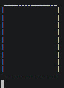
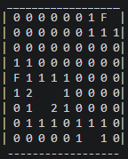
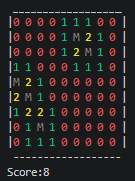
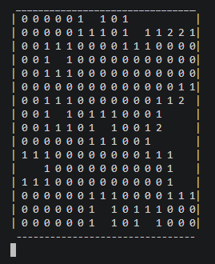

screenshots
See tmscli in action — straight from the terminal.
Fresh board

A new game, waiting for your first move.
Mid-game

Numbers revealed, flags placed.
Victory

All mines flagged, all safe cells revealed.
Custom board

Bigger boards with tmscli -s 16 -m 15 — tmscli is customisable to make it suitable for you.